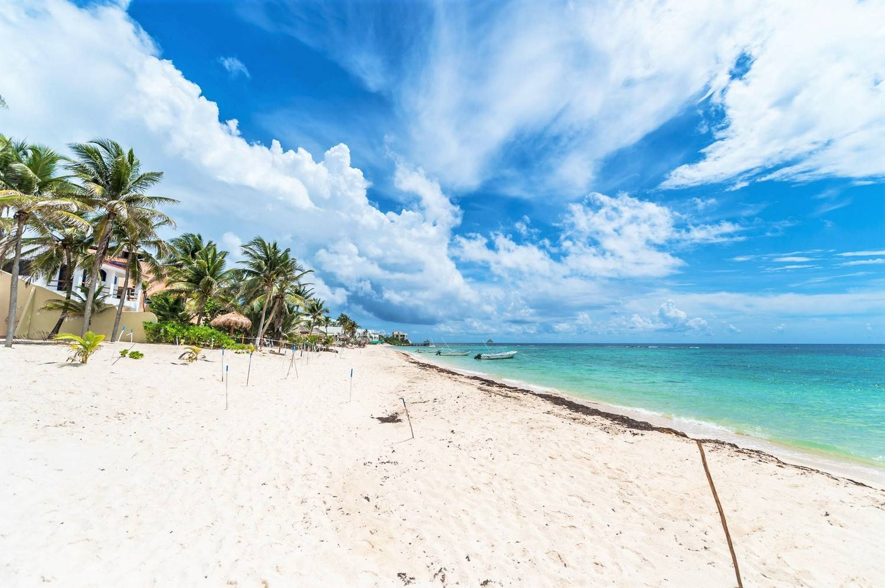
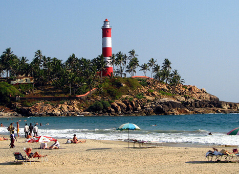
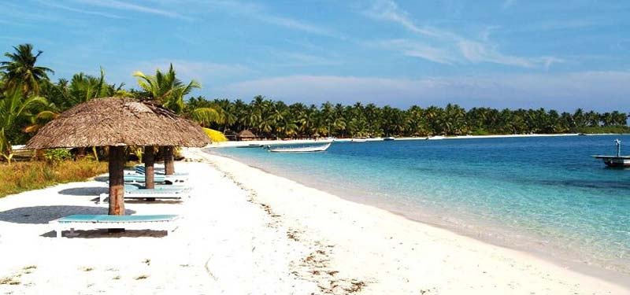
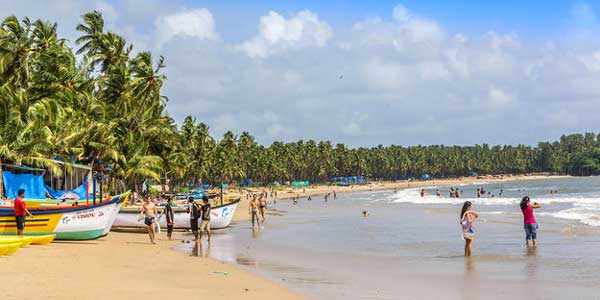
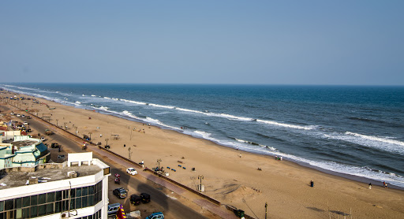
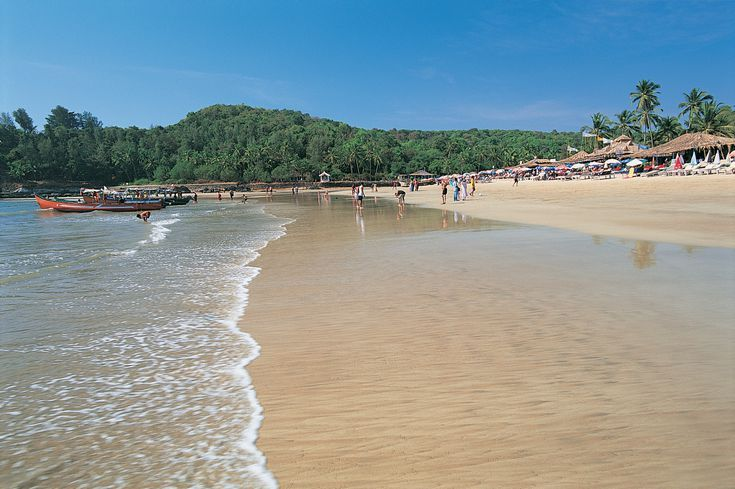

S A F A R I
INDIA'S FAMOUS BEACHES

SERENITY BEACH
As the name suggests, the Serenity beach is perfectly serene and tranquil with an abundance of views that blow your mind.
The scenic view and seclusion of the beach make it ideal for spending some quality time with your special one.
Best time to visit is October to February
Things to do is take a stroll on the pathway of the beach, enjoy the perfect sunsets.
The Serenity beach is located towards the northern side of Pondicherry and is easily accessible from the Pondicherry bus stand. The bus stand located at the centre of the city is located just 10 kms away from the beach and one can get autos and buses from there.
Best time to visit : The best time to visit Serenity beach in Pondicherry is from early morning to evening 6.30 pm. For enjoying the sunrise, you can visit the beach on early dawn. The surfing activities start from daytime and you can enjoy the sand and sun throughout the day until evening.

PALOLEM BEACH
Palolem Beach is a stretch of white sand on a bay in Goa, South India.
It's known for its calm waters and for its nightlife, including "silent discos" where partygoers wear headphones.
Lined with palm trees and colorful wooden shacks, the beach faces Canacona Island, known for its resident monkeys.
To the south, turtles nest at Galgibaga Beach. Inland, Cotigao Wildlife Sanctuary is home to birds, wild boars and gaur.
It is about one mile (approximately 1.61 km) long and is crescent-shaped; one can view the entire beach from either end.
Both ends of the beach consist of rocks jutting out into the sea.
Things to do on Palolem beach include yoga classes, dolphin-spotting trips, Ayurvedic massages and silent discos.
Best time to visit : You can plan your visit anytime between 6:00 am to 10:00 am throughout the week.

MARINA BEACH
Marina Beach is a natural urban beach in Chennai, Tamil Nadu, India, along the Bay of Bengal.
The beach runs from near Fort St. George in the north to Foreshore Estate in the south, a distance of 6.0 km, making it the longest natural urban beach in the country.
The Marina beach was famed for its pristine beauty, jolly ambiance, and rich ecosystems.
Bathing and swimming at the Marina Beach are legally prohibited because of the dangers, as the undercurrent is very turbulent. It is one of the most crowded beaches in the country
Marina beach is a major tourist attraction of the city. People visiting Chennai make a point to visit the beach.
Best time to visit : November to February

RADHANAGAR BEACH (HAVELOCK ISLAND)
Havelock Island, officially Swaraj Island, is the one of the largest islands that comprise a chain of islands to the east of Great Andaman in the Andaman Islands.
It belongs to the South Andaman administrative district, part of the Indian union territory of Andaman and Nicobar Islands. The island is 41 km (25 mi) northeast of the capital city, Port Blair.
Radhanagar Beach on the western coast, also known as Number 7 Beach, is one of the most popular beaches on Havelock and was named "Best Beach in Asia" by Time in 2004.
The island can be reached from Port Blair by government-operated ferries and private cruises. There are also helicopter services. A local bus connects the jetty and villages on an hourly circuit.
Best time to visit : Havelock experiences mild winters and the temperature generally ranges between 15 degree Celcius and 34 degree Celcius. It's the ideal time to plan a trip and it's no wonder that most tourists, especially honeymooners, like to travel here in this period. You can easily plan all beach activities and water sports.

KOVALAM BEACH
Kovalam is a small coastal town in the southern Indian state of Kerala, south of Thiruvananthapuram.
Kovalam has three beaches separated by rocky outcroppings in its 17 km coastline, the three together form the famous crescent of the Kovalam beach.
Lighthouse Beach is the one most frequented by tourists, Lighthouse Beach got its name due to the old Vizhinjam Lighthouse located on a 35 meter high on top of the Kurumkal hillock. The lighthouse is built using stones, is colored in red and white bands and enjoys a height of 118 feet.
Hawa Beach, ranks second, in the early day, is a beehive of activities with fishermen setting out for sea. With a high rock promontory and a calm bay of blue waters, this beach paradise creates a unique aquarelle on moonlit nights.
Samudra Beach, A large promontory separates this part from the southern side. Samudra Beach doesn't have tourists thronging there or hectic business. The local fishermen ply their trade on this part.
Best time to visit : November to February, The winter season is by far the best time to visit Kovalam

AGATTI ISLAND
Agatti Island is a 7.6 km long island, situated on a coral atoll called Agatti atoll in the Union Territory of Lakshadweep, India.
Most people speak Malayalam and English and Tamil_language.
Agatti is one of the Lakshadweep islands open to tourism. Visitors, however, are allowed to the Island under certain restrictions.
They are required to obtain Entry Permit from the Lakshadweep Administration for entering or visiting the island.Entry Permit is issued based on the visitor having a confirmed place to stay.
There are only two hotels or resorts in Agatti: Agatti Island Beach Resort (AIBER) and the other is Sea Shells Beach Resort. A road runs through the island, which can be best enjoyed by hiring a bicycle available at many places.
Best time to visit : November and continues till February.

COLVA BEACH
Colvá is a coastal village in Salcete, south Goa, on the west coast of India.
Colva Beach stretches for around 2.4 kilometres (1.5 mi), part of a beach consisting of about 25 kilometres (16 mi) of powder white sand, lined along its shore by coconut palms and extending from Bogmalo in the north to Cabo de Rama in the south.
Colvá is a famous tourist destination, visited for its beaches, budget hotels, guest houses, beach shacks, food stalls, restaurants, pubs and bars. The beaches are constantly monitored by lifeguards, and the swimming areas are flagged for warnings.
The village had significant importance to Portugal and was the retreat for Goa's high society, who would come to Colvá for their "Mundanca" or change of air.
The beach is particularly busy in October, when hordes of religious pilgrims come and visit Colvá Church, called Igreja de Nossa Senhora das Merces, that was founded in 1630 by the Roiz family and rebuilt in the eighteenth century on the village square.
Best time to visit : November to February is the best time to head out for Colva Beach.

PURI BEACH
Romantic sunrises and spectacular sunsets are some of the best assets of the Puri beach in Odisha.
White sands and clear waters of the beach further add to the glamour of the views.
Puri Beach is a beach in the city of Puri in the state of Odisha, India. It is on the shore of the Bay of Bengal.
The beach is the site of the annual Puri Beach Festival, which is co-sponsored by the Indian Ministry of Tourism, the city of Odisha, the Development Commissioner of Handicrafts, and the Eastern Zonal Cultural Center, Kolkata.
The beach hosts sand art displays, including work by international award-winning local sand artist Sudarshan Pattnaik.
Best time to visit : Winters (December-February) are a bit cold, but good to enjoy the beach and visiting temples
